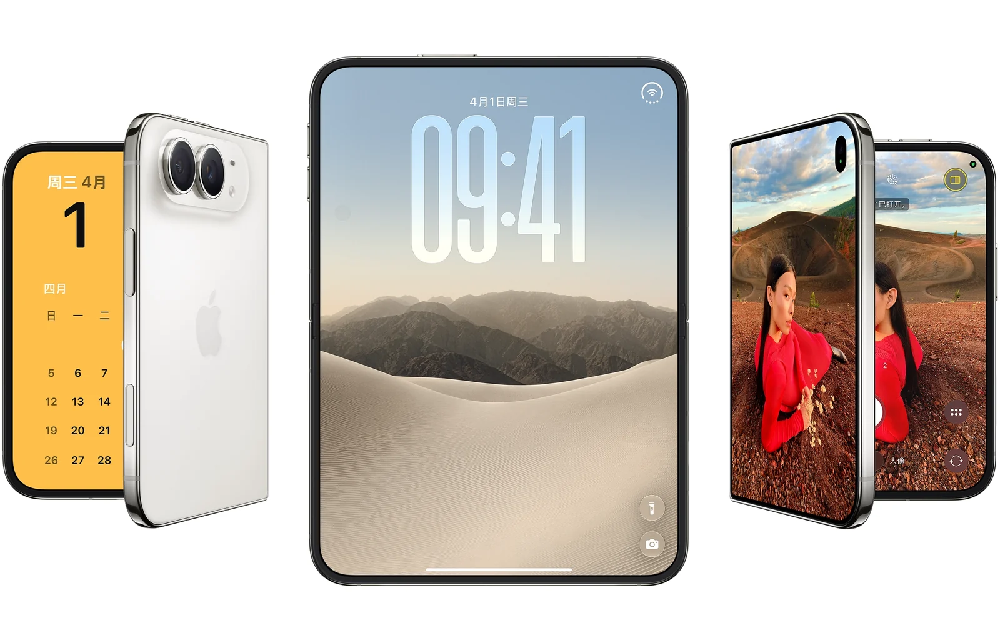
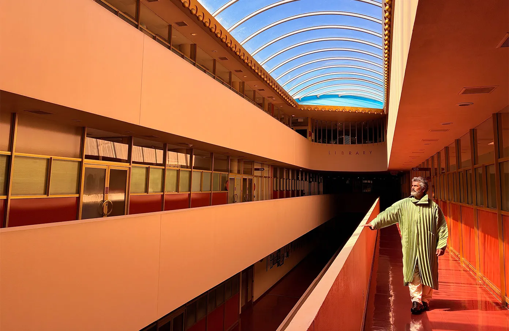

01 / 大屏
一打开，
一打开，
屏幕大一半。
7.6 英寸内屏，比 iPhone 18 Pro Max 大 50%。看片、回邮件，一屏装得下更多。

打开是 7.6 英寸大屏，
合上还是那部顺手的 iPhone。
7.6 英寸内屏，比 iPhone 18 Pro Max 大 50%。看片、回邮件，一屏装得下更多。

A20 Pro，2 纳米制程，Pro 级性能。
边框和铰链护壳都用钛金属打造。
够轻薄，也经得起天天开合。

夜空色


人像和建筑的纹理，放大看依然清楚。
外屏实时显示取景画面，镜头前的人能自己调整姿势和站位。

2 纳米制程，散热也升级了。
多开 app、长时间打游戏，依然流畅。

共 5 个问题
宽阔的内屏适合阅读、观看视频和处理日常事务。支持分屏浏览的应用，还能让两份内容并排呈现。具体功能和可用性请以 Apple 官方介绍为准。
本页展示夜空色与星光白色。可以在上方“两种颜色，三种姿态”区域点击配色按钮，对比两种外观。
Duo 双屏预览能让被拍摄的人在外屏查看画面，调整姿势和构图。镜头两边的人，可以一起参与拍摄。
iPhone Duo 的内屏为 7.6 英寸超视网膜 XDR 显示屏。屏幕尺寸按对角线测量，实际可视区域会受到圆角等设计影响；详细说明请参阅官方技术规格。
本页是独立设计展示作品。完整的技术规格、功能可用性、售价与购买信息，请访问 Apple 官方产品页面。